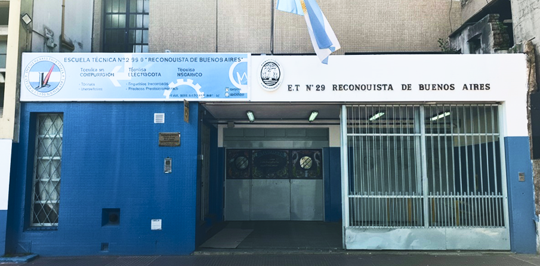

LA ESCUELA
Formando técnicos con excelencia, impulsando la innovación y construyendo una historia rica en compromiso educativo y profesional. Brindamos una formación sólida y actualizada, preparando estudiantes capaces de enfrentar los desafíos del mundo tecnológico y laboral, con valores de responsabilidad, esfuerzo y superación.
Nuestras Instalaciones
La escuela cuenta con dos edificios separados por el patio abierto, más el taller, al cual se accede a la vuelta por la calle Maza. Contamos también con un aula digital, equipada con computadoras de escritorio y portátiles para todas las especialidades, auditorio, biblioteca, buffet y un laboratorio de química, además de las instalaciones específicas de cada especialidad en su respectivo sector.


Historia del Establecimiento
Orígenes y Formación
Establecida en Boedo 760, la Corporación de Transporte crea en el año 1944 la Escuela de Aprendizaje con el objetivo de formar obreros capacitados para sus talleres en las especialidades de soldadura, chapistería, tornería, mecánica de ajuste, mecánica de automotor y electricidad.
Estaba compuesta por una sección de aulas para las clases teóricas y una sección para los distintos talleres. En 1945, comienza a funcionar en la escuela el primer año.

Crecimiento y Excelencia
Al comenzar el curso en 1947, la Escuela completa el ciclo básico, de tres años. Durante el año 1948, un nuevo servicio social se incorpora: almuerzo gratuito para todo el alumnado y personal docente, como así también el ciclo técnico superior.
La escuela adquirió fama en Sudamérica, recibiendo delegaciones de Venezuela, Colombia, Ecuador y Brasil. Su lema era: “Enseñar produciendo”.

Consolidación como ET N°29
En 1963, la Escuela se incorpora al régimen de las Escuelas Nacionales de Educación Técnica de la Nación, pasando a ser Escuela Nacional de Educación Técnica Nº 188. Con posterioridad se le asigna el Nº 29.
En 1967 recibe el nombre de Reconquista de Buenos Aires. Su distintivo es la galera del Regimiento de Patricios, ganadora de un concurso institucional.
Prácticas Profesionalizantes
Consolidando saberes y capacidades del perfil profesional en entornos reales de trabajo.
Ambientes Productivos
Realizadas fuera de la escuela en Organismos Públicos o Privados, aplicando conocimientos en entornos verdaderos de trabajo.
Proyectos Institucionales
Llevados a cabo en la escuela, integrando habilidades técnicas para resolver problemáticas significativas del sector.
Empresa Simulada
Un ambiente productivo real dentro de la escuela, trabajando variables propias del sector productivo de cada especialidad.